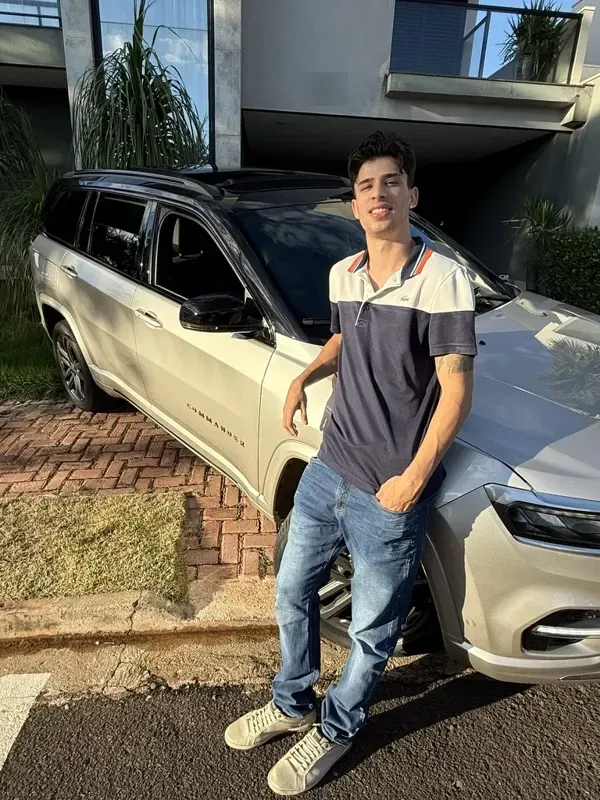
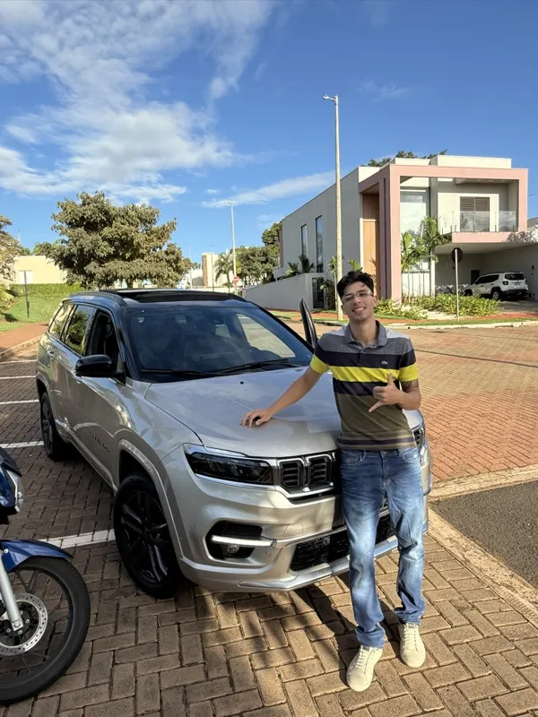
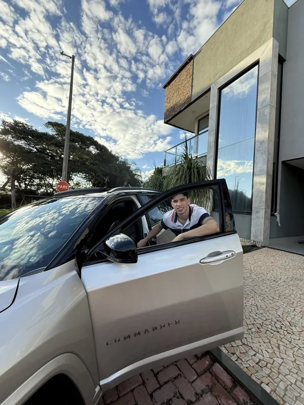
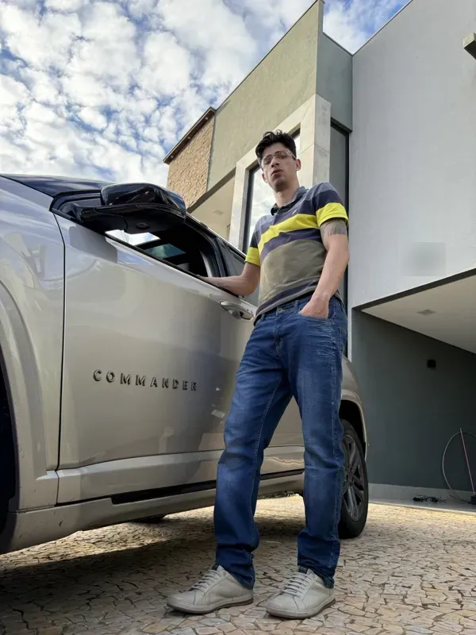
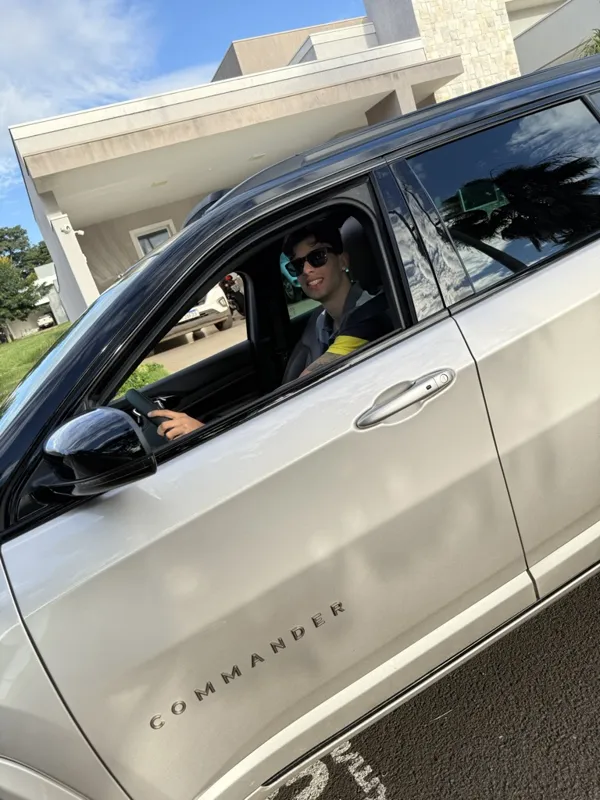
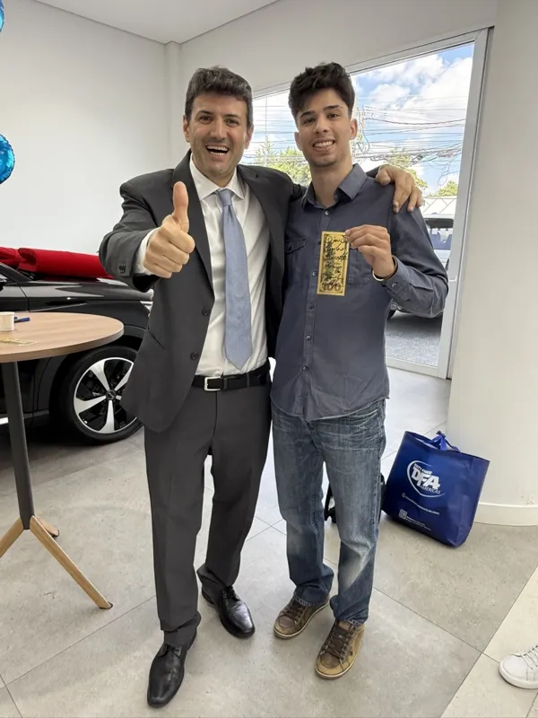

Design · Code · Technology
Dione Folador Jr
Visual Identity Designer · Token and Systems Developer at Zebubit
I understand the market from three angles: the code that powers it, the charts that move it, and the people learning to navigate it.
100K+followers on Instagram @dione_fol
12countries in my network of traders and partners
Day to dayMoments






What I doHow we can work together
Design and visual identity
I create the visual identity of brands, with elegant and consistent design in every project: logo, colors, typography and every piece the brand needs.
- Visual identity
- Logos
- Social media
- Web design
Tokens and systems at Zebubit
At Zebubit, I develop tokens and systems: platforms, tools and automations for businesses and for the crypto and financial market.
- Tokens
- Systems
- Websites
- Platforms
- Automation
Forex and crypto trading
Active trader in Forex and cryptocurrencies, with hands-on technical analysis and risk management.
- Technical analysis
- Risk management
- Forex
- Crypto
Trading education
I teach and mentor new traders, turning complex market concepts into clear, practical lessons, with discipline first.
Ask about classes →NetworkWhere I have connections
AsiaSouth Korea · Japan · China · Thailand · Vietnam
EuropeSpain · Portugal
AmericasBrazil · United States · Paraguay · Argentina · Colombia